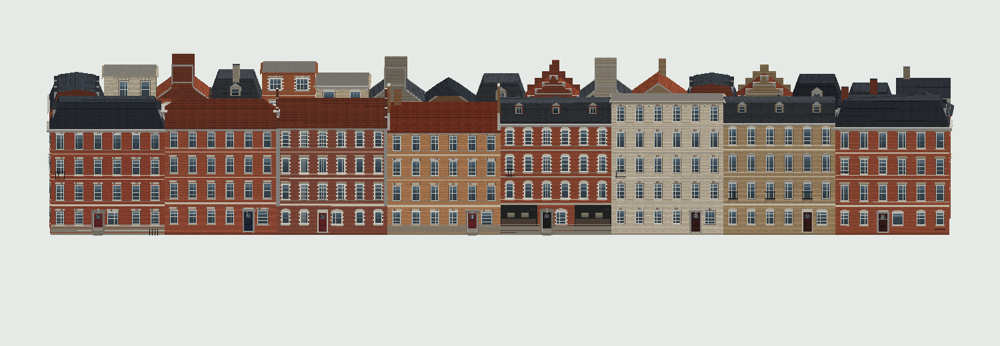
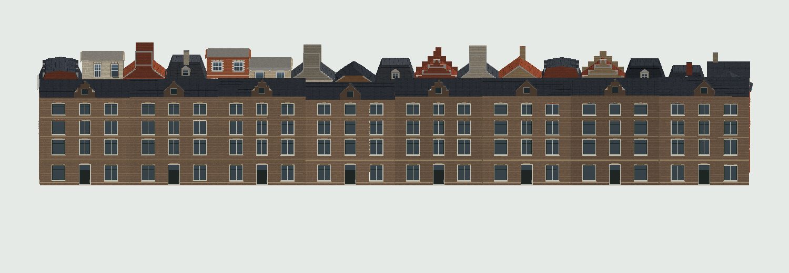
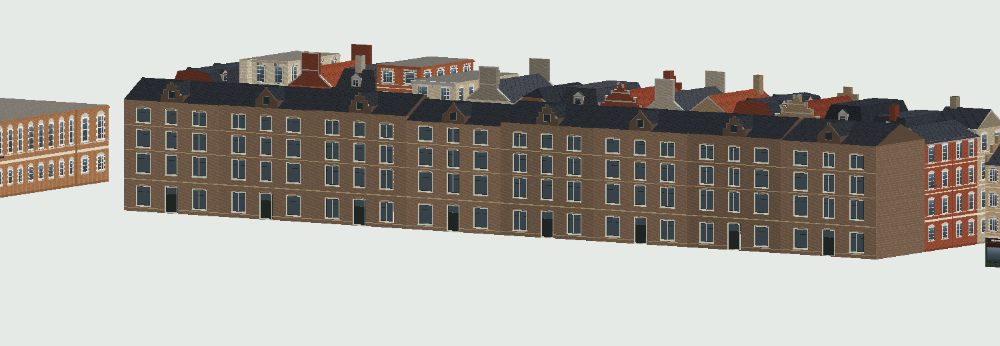

← Street generator checkpoints
Marnixstraat 124–138
The repeated row seen from 263 Marnixstraat: eight houses share three window axes, a central entrance, pale paired frames and yellow brick bands. Pointed and stepped stair-bay gables alternate along the roof.
The eight-house row is now installed in the game after source, desktop and touch review. These comparison images show the original procedural geometry.
Open game →

Before · ordinary building generator

After · repeated frontage family on the same native footprints

These images use the game’s geometry and materials in a CPU preview. Reference dimensions are approximate. Clear 2023 municipal photographs and the supplied 2024 view guide the facade; a 2025 view is hidden by renovation scaffolding.
The first integration comparison exposed a missing masonry wall caused by duplicate fallback context. That defect was repaired, with a regression check for every house. Earlier failed evidence is retained locally.
Official architectural description ↗ · Historic ensemble and drawings ↗ · Municipal street imagery ↗